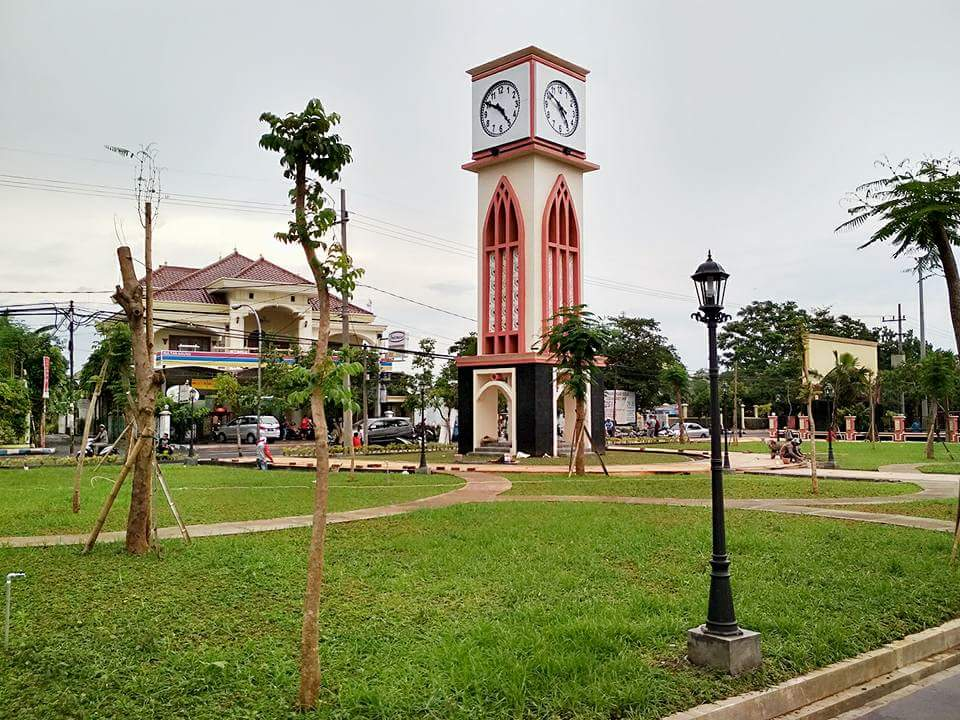
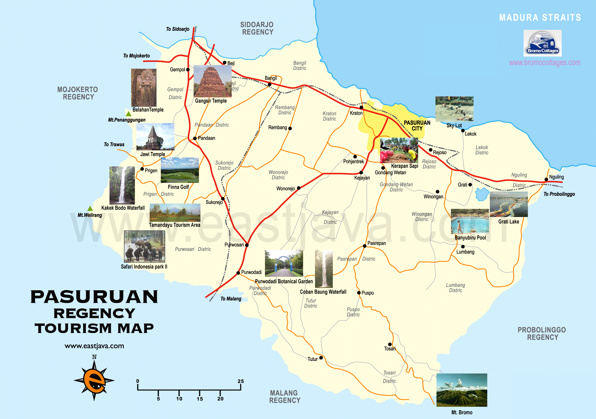

Sejarah Kota Pasuruan

Pasuruan di masa lalu dikenal dengan nama ‘Paravan’ Orang Tionghoa menyebut Pasuruan sebagai Yanwang atau Basuluan. Ada juga yang menyandingkan nama Pasuruan dengan kata ‘Pasar dan ‘Oeang’. Ini tidak lepas dari ramainya perdagangan di Pasuruan dengan
adanya Pelabuhan Tanjung Tembikar, sehingga mampu menarik banyak kaum pedagang untuk datang ke Pasuruan. Berkat pelabuhan ini pulalah di masa lalu Kota Pasuruan menjadi salah satu pusat terjadinya transaksi dagang antar pulau di kawasan
timur nusantara.
Perkembangan kesejarahan Kota Pasuruan tidak bisa dilepaskan dari keseluruhan sejarah Pasuruan. Seperti naik tahtanya Untung Suropati sebagai salah seorang raja Pasuruan. Ataupun Adipati Dharmoyudo yang secara turun temurun pernah menjadi penguasa Pasuruan.
Namun secara legalitas formal, kepastian mulai adanya Pemerintah Kota setelah dibentuknya Residensi Pasuruan pada 1 Januari 1901 oleh Pemerintah Hindia Belanda. Kemudian ditindaklanjuti pembentukan Kota Praja (Gementee) Pasuruan seperti
termaktub dalam Staatblat 1918 No. 320 dengan nama Stads Gementee van Pasoeroean pada tanggal 20 Juni 1918.
Letak Geografis

Kota Pasuruan memiliki posisi strategis secara ekonomi, karena wilayahnya berada pada jalur utama transportasi dan perdagangan yang menghubungkan daerah Surabaya dan Bali. Dimana Kota ini berjarak sekitar 60 km dari Subaya dan 355 km sebelah barat laut
Kota Denpasar, Provinsi Bali. Selain itu, keuntungan geografis lainnya adalah Kota Pasuruan dikelilingi oleh wilayah hinterland Kabupaten Pasuruan sebagai pendukung utama kota ini.
Secara astronomis, Kota Pasuruan terbentang pada 112° 45′ – 112° 55′ Bujur Timur dan 7° 35′ – 7° 45′ Lintang Selatan. Dimana wilayahnya merupakan dataran rendah dengan ketinggian rata-rata 4 meter diatas permukaan laut dan topografinya melandai dengan
kemiringan 0 – 1% dari selatan ke utara. Sehingga tidaklah mengherankan jika kota ini sering dilanda banjir di musim hujan. Wilayah Kota pasuruan, seperti halnya wilayah lain di Pulau Jawa, memiliki iklim tropik basah yang dipengaruhi
angin monsun Barat dan Timur. Angin monsun barat dan timur menyebabkan terjadinya dua musim, musim hujan dan kemarau.
Prestasi
Pemerintah Kota Pasuruan menerima 2 (dua) penghargaan dari Badan Pusat Statistik (BPS) Provinsi Jawa Timur dan Badan Pusat Statistik (BPS) Republik Indonesia atas capaian response rate yang melebihi target dalam pelaksanaan Sensus Penduduk Online (SPO).
Penghargaan tersebut di serahkan oleh Kepala BPS Provinsi Jawa Timur Bapak Dr. Dadang Hardiwan S.Si, M.Si kepada Plt. Walikota Pasuruan Bapak Raharto Teno Prasetyo, ST pada hari Rabu pagi tanggal 22 Juli 2020 di ruang kerja Sekretariat
Pemerintah Kota Pasuruan. Pada kesempatan ini hadir Kepala BPS Kota Pasuruan Ibu Sri Kadarwati, S.Si, MT, Kepala Dinas Komunikasi, Informasi dan Statistik Kota Pasuruan Bapak Kokoh Arie Hidayat, SE, S.Sos, MM dan Plt. Kepala Dinas
Kependudukan dan Pencatatan Sipil Kota Pasuruan Ibu H. Siti Mariyam, S.Sos, MM.
Pemerintah Kota Pasuruan meraih peringkat XII “Memuaskan” dengan nilai 88,47 dalam Penganugerahan Pengawasan Kearsipan Tahun 2019, yang diselenggarakan oleh Arsip Nasional Republik Indonesia (ANRI) di The Sunan Hotel, Surakarta, Jawa Tengah pada hari
Rabu tanggal 26 Februari 2020. Penganugerahan tersebut dalam kategori Pemerintah Daerah Kabupaten/Kota berdasarkan hasil pengawasan tahun 2019. Penyerahan penghargaan diberikan oleh Menteri Pendayagunaan Aparatur Negara dan Reformasi
Birokrasi (Menpan RB) Republik Indonesia Bapak Tjahjo Kumolo dan Plt Kepala ANRI Bapak Muhammad Taufik kepada Plt. Walikota Pasuruan Bapak Raharto Teno Prasetyo, ST dan juga hadir Plt. Dinas Perpustakaan Dan Kearsipan Kota Pasuruan
Bapak Ir. Yudi Andi Prasetya, M,Si serta Kepala Bidang Kearsipan pada Dinas Perpustakaan Dan Kearsipan Kota Pasuruan Bapak Firmansyah.
Gubernur Jawa Timur Ibu Khofifah Indar Parawansa memberikan penghargaan kepada PELANGI SAKINA (Peduli dan Sayangi Ibu, Stop Kematian Ibu dan Anak) UPT Puskesmas Gadingrejo Kota Pasuruan sebagai Top 45 kompetisi inovasi pelayanan publik Provinsi Jawa Timur
Tahun 2019 kategori Kesehatan. Piagam penghargaan tersebut di berikan oleh Gubernur Jawa Timur kepada Plt. Walikota Pasuruan Bapak Raharto Teno Prasetyo, ST di Hotel Bumi Surabaya Jalan Jenderal Basuki Rakhmat Nomor 106-128 Embong
Kaliasin, Kecamatan Genteng, Kota Surabaya pada hari Selasa tanggal 3 Desember 2019. Dalam kesempatan tersebut Plt. Walikota Pasuruan di dampingi Sekretaris Daerah Kota Pasuruan Bapak Drs. H. Bahrul Ulum, MM, Kepala Badan Perencanaan
Pembangunan, Pengembangan Dan Penelitian Daerah Kota Pasuruan Bapak Drs. H. Djoko Adri Srijono, M.Si, Plt. Inspektur Kota Pasuruan Bapak H. Mualif Arif, S.Sos, MM dan Kepala Sub Bagian Ketatalaksanaan dan Pengembangan Pelayanan Publik
pada Bagian Organisasi Sekretariat Daerah Kota Pasuruan Bapak Wakhfudi Widayat, S.Sos.